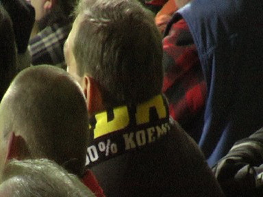
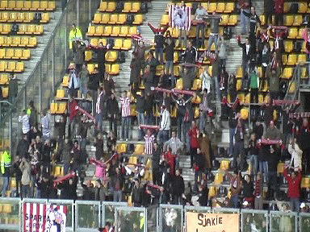
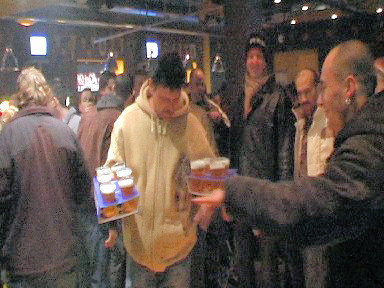

Ongeacht het resultaat... ja!
Veel vlagvertoon op west.
De wedstrijd begint bagger. Sparta verprutst een superkans en Roda probeert
het record over-doel-schieten te verbeteren. Na dik twintig minuten maakt
Bodor een overtreding die door Rijnmond-maffia-scheids Haverkort met een
vrijetrap bestraft wordt.
Polak prikt de bal voorbij de muur en achter Castro: 0-1, (22').
Buitenspeldoelpunt van Oper.
Dezelfde Polak smeert Oper even later een gele kaart aan.

0-1 ruststand... er is nog hoop.
Ach Herjot, ook dat nog...
Het kan nog erger; Roberts scoort 0-2, (48').
fotosv-online.info

100% KOEMPEL !!!
De aangekondigde komst van SYC bleef uit maar deze kasteelheertjes hadden
een big party.

ONGELOOFLIJK.... Sparta komt op 0-3 door een doelpunt van weer Roberts,
(58'). Roda speelt tegen de nummer 17 !!!
Een voorzet van Cissé wordt door Schenkels achter de eigen doelman gewerkt:
1-3, (67').
Er is weer hoop op de tribunes.
Cissé is voortdurend de vrije man. Alles gaat over links.
De Roover haalt Cissé onderuit: penalty.
Vaste man voor deze buitenkansjes Meeuwis scoort 2-3, (79').

Het slotoffensief van Roda levert niks meer op en zo loopt de club tegen een
blamage aan. De Spartafans vieren de tweede overwinning van dit seizoen...
Het voordeel van deze nederlaag is dat ons de humba bespaard blijft.
Onbeheerde dikke rookwaar.
Een protestvuur in de Kickoff.

De bierblusser...
Onze favoriete steward lost het brandje diplomatiek op.
Na lang, zeer lang wachten kwamen de volgende spelers
naar de Kickoff: Oper, Lamah, De Jong, Mardulier en Sibum.

Lamah met aankomende Rodagirl Kelly heeft het prima naar zijn zin bij Roda.